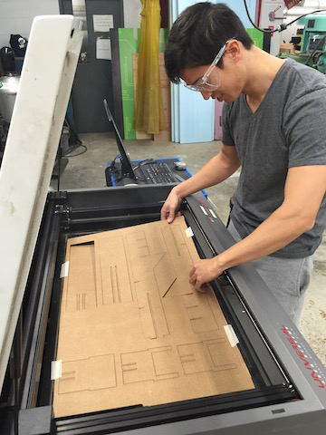
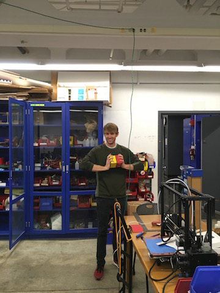
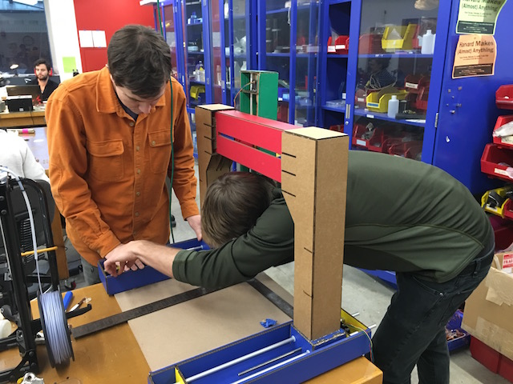

// Overview
Icing, or other materials of similar mechanical properties, can be layered -- paving the way to more experimentation in paste extrusion (of both edible and non-edible type such as clay). Our goal is to 3D print icing on a cake or brownie and eat it too.
// Project management
The initial fabrication blocks (including the SCIENCE cardboard constructs) were made back in early November with help from Nadya, but the rest of the work got started in late November. Before our first meeting, Elizabeth sent out a spreadsheet to organize ideas and meeting times. At the first meeting, we discussed the pros and cons of building a pancake printer (Jake’s idea), an icing extruder (Tiffany’s idea), or a motorized time-lapse slider with a pan-tilt head (Gabe’s idea). A blind vote produced the winning idea: the icing extruder. After some discussion of the productivity benefits of 3-5 person teams (see Small teams, big impact), we divided into an end-effector design group, a chassis design group, a programming group, a board soldering group, and a group devoted to finishing up the fabrication modules initiated during the session early in November. In addition, Ye volunteered to document and Tiff wrote the first version of the group webpage. Elizabeth sent out a meeting summary, including a list of the expected deliverables, a roster for each sub team, contact info to facilitate teams self-organizing, and a date for the next all-team meeting, and a GANTT chart to indicate dependencies so that sub-teams would not block the progress of any other sub-teams. All the teams worked independently but coordinated with each other via email and at the meetings so that any dependent tasks were passed off smoothly from one group to the next. In addition to the first day building with Nadya, the larger team met three times, and each subgroup met separately, as well.

// Paste extrusion
There are several methods of extruding pastes such as icing. A long time ago, Makerbot developed a frosting extruder. A syringe was filled up with frosting, and an air compressor supplied pressure. One solenoid valve opens to dispense frosting, and another served as a relief valve to stop the frosting from oozing. RepRap also developed a support extruder, consisting of two parts: a pressure vessel (fancy way of saying a water bottle and balloon), and a solenoid to let pressurized air in. Activating the solenoid allows a bit of compressed air into the bottle, therefore compressing the balloon containing paste which travels through the nozzle. The water bottle could also serve as a hot water bath for molten paste (or at least make things go down easier). Alternatively, peristaltic pumps - basically a flexible tube with a set of rollers pushing fluid along - could also be used, but better suited for thinner liquids. Finally, the Moineau pump / Archimedean screw looking progressive cavity pump consists of a helicol rotor (screw) and stator (cavity) which have slight gaps between them that can pump a fluid from one place to another.
References: 1 / 2 / 3
// Toolhead development
The end-effector design team consists of Daphne Basangwa, Glenn Bogardus, Ye Li, Anjie Liu, Dixon Magister and Joseph (Joe) Negri. We are in charge of the design and development of the toolhead, namely, the nozzle and the extruder. We have implemented and compared the peristaltic pump method and the Moineau pump method.
The Peristaltic Pump Method
Joe has designed and shared with our group a board that uses a peristaltic pump as an output device.


Anjie and Dixon tried to get the frosting to go through the narrow tube that goes through the pump, but they realized that the frosting was too viscous to go through. Rob, who happened to have a pastry bag with metal tips, suggested that they pump water into a balloon to push the frosting out of the bag instead. That worked out well! The idea is to pump water into the balloon, which is placed inside the pastry bag on top of the frosting. As the balloon gets bigger, it pushes the frosting out of the pastry bag.


Here is a video that shows the successful extrusion:
The Moineau Pump Method
Daphne and Ye 3D-printed the Moineau pump/Archimedean screw model from the link in the "Paste extrusion" section above. The parts had already been designed. Before we were able to print the parts, the 3D printer ran into the issue of not extruding filament properly; so Dixon had to take the head apart and manually make sure that the filament was going into the nozzle.
As we were trying to assemble the parts together we realized that we needed a bigger hole on the square-shaped base in order to insert the inner pieces of the pump after attaching them to the stepper motor. Joe tried to use a spade bit and accidentally broke the base. We learned that the spade bit had too much torque and the PLA print was too brittle to withstand that.


We then decided to test this device with frosting before moving on further. We joined the two tubes with screws and made sure that the tube was air-tight. We then drilled a hole and inserted a screw into the flute-shaped inner piece, filled the pump with frosting and sealed the top of the pump. We used a drill to turn the screw and the inner piece quickly, but we noticed that the frosting came out of the pump too slowly.


The "Giant Syringe" Approach
Glenn went ahead and designed a completely new end-effector system - one that looks like a big syringe. Here is how the prototype looks like:


The idea is that the upper 3D-printed part will have a nut embedded in it, and will move up/down as the stepper motor drives the threaded rod. As it moves down, it will push the rod and the plunger into the tube, extruding the frosting.
Glenn also laser-cut all the pieces and assembled the end-effector system together:


Here is a picture of Gabe pointing at the 3D-printed tip of the piston:

We realized that the top part of the piston was not big enough to host the nut; so Glenn had to modify his design a bit.

Here is a picture of all the parts that had some sort of defect and eventually got replaced:

And here is what the final, assembled system looks like:


The white tube is a section of a 2.5" diameter PVC pipe (10 inches, capacity about 1/2 liter of frosting) that Glenn purchased from a hardware store for $5. It's food safe. Tiffany was able to get the motor to turn and push piston into the syringe smoothly.
Here are all the files in Glenn's design.
// Chassis
Designing the chassis
We wanted three degrees of freedom, so we decided to have two columns that moved simultaneously in the y-plane, holding up the a cross that would move in the x-z plane. We wanted to make sure there was enough space for the piping bag to move, without hitting the cake if it were slightly taller. Jacob designed the columns on Rhino and Justin designed the laser cut files. [Download Rhino File]
Chassis Rhino design
Back to week 1: Lasercutting the columns
Gabe and Albert went to shop and starting laser cutting everything out. It's been a while since week 1, so no one remembered how to laser cut. Fortunately, we had great documentation on hand, and Rob and Daniel came to help.
Gabe and Rob gaze into the fire
For some reason, importing it over from Rhino to Coreldraw shrunk the image. We sized it back up and crossed our fingers that it would fit. After a few trial and errors, we remembered that we had to select the RGB colors on the right hand column with a right click to make sure the color profile is ripe for cutting. We also remembered that all the lines had to be hairline.
Albert lifts the chassis
Most of the pieces came out great! There were some pokings to get smaller pieces out, but most of the pieces cut through/scored as we hoped.
Finished pieces
Assembly
The next day, the team got together to assemble everything together.
Justin the press-fit constructor
We soon realized that the bottom piece must have changed since Nadia designed the files - for they did not match the patterns on the blue box. We just went with it and hot glued them roughly in the center. For extra security, we fastened them with long screws with washers/nuts.
The little blue box
We then went to town with putting everything together to see how it looked.
Assembly party
We ran into some issues with the rods sticking out of the red modules, which ran into the pieces of cardboard within the holding structure. But with some good ole force we got it in there.
Skeptical Justin
The structure moved and flexed quite a bit because of the nature of the cardboard pieces. To make sure everything was stable, we decided to glue gun every single edge, especially those holding the lattice interior of the module boxes together. Honestly, 80% of our time was spent glue-gunning and waiting for the glue gun to dry. Good thing we had resident glue-gun expert and apostle, Jacob Hamman.
Happy Jacob
Once everything was put into place, we tested it by manually twisting the threads to move the modules.
Oh no. It's stuck.
We couldn't get the green module to move past a certain point. Looking around inside, it seemed like the cardboard was not flush on the corners, preventing the module from moving further. Against protests from Albert and Gabe, Jacob made the executive decision to take it apart and fix the problem.
Nothing some X-acto knife and hot glue gun can't fix!
But then we noticed that there was also glue stuck in the thread. Maybe that is why it wasn't moving? In any case, it was time for more post-production surgery.
"The worst place we can get glue is in the threads. Oh..."
We couldn't get enough of the glue gun, so we put in more glue.
Ain't no party like a glue party
Afterwards with some meticulous measurements, we aligned the two blue modules parallel and the two columns orthogonal, so that there would not be any skew when they moved.
Jacob measures it out
To hold everything together, we put in temporary rubber bands. And obviously more glue.
More glue? Yes please.
And that was it!
Photo at the finish line
We spent three solid hours assembling. But the final chassis looked great!
// Programming
Nadya Peek visited the Harvard section to help us get gestalt - a framework she wrote that allows easier creation and control of automated tools - functioning on our computers. First, make sure you have pyserial (a library allowing serial communication control), get her files from github, and then type:
cd pygestalt-master
python setup.py install
python
import pygestalt
cd examples/machines/htmaa
python single_node.py
When you run her python example, it will ask you to identify each node on the network by pressing its button. After you identify the node(s), the code will run and move the stepper motor back and forth! A week passed after Nadya's visit and some mysterious things happened to our gestalt nodes and power supply... Testing each node individually, it was discovered that at least one board was destroyed and our 24V power supply had also died (both of which were used successfully before). It was also learned that the bench power supply cannot be used with gestalt nodes. After finding a new power source, the same error "could not reach virtual node" kept showing up. We checked the voltage (regulated to 5V on the board) and cables (never hot plugging), all connected properly...
[these diagrams are your new best friends]
Dan Chen was helping all weekend, and we suspected that the boards were bad. He saved the day by getting us replacements! The new ones are fantastic. We also found out that our FTDI cable was damaged along with the broken power supply and board. I guess what happened to them we will never know...

[checking all the good/bad boards and connections]
[label everything! most crucially, the stepper motors/node order. also note the tape on power supply, to protect shorts when children drop conductive things onto the terminals...]
[click the buttons in the correct order and the persistance file will remember that sequence]
[testing the movement of end effector, and extruding seperately]
[using rhino/grasshopper and c# to generate tool paths and extrusions]
[what the tool path is supposed to look like]
Daniel built a software UI for drawing toolpaths. The code is written in python using Tkinter and provides a canvas for drawing on. Drawings can use straight lines or free-hand scribbles, and a drawing thickness can be selected that instructs the machine how fast to extrude icing as it moves. Nicely, the Tkinter canvas lets you save references to each drawn shape and edit or delete the shape later, so each drawn component is added to a drawings stack, and the corresponding toolpath is computed by iterating across this stack and extracting coordinates from the Tkinter components. A delete functionality lets you roll back your drawing - since the toolpath is calculated from the drawing stack, there's no challenge keeping it in sync with the displayed canvas. Every time the canvas changes, the toolpath is recomputed and displayed in a textbox for direct access by the user.
Next to the drawing UI is a basic machine controller UI. It allows the machine to be moved in x y and z, to set the current position as the x-y-z zero, and to send the drawn toolpaths to the machine.
In general, working with Tkinter was nice. The one annoying thing is Tkinter's event propagation. Coming from a background developing javascript/HTML UIs, Tkinter's model feels wierd. In javascript/HTML, a UI event bubbles up from the element it is triggered on through each of its parent elements such that each possibly intended element gets a chance to handle it in priority order of the elements' specificities. At any point an element can tell the event to stop propagating, containing its effects in a local region. With Tkinter, events do not propagate through containers; instead, an event triggers on exactly four places: the target element, the root element, the target element's class, and the Application class. Tkinter functionalities are bound to the target element's class, which is pretty late in the propagation chain. For the drawing app, keypress events are handled globally to enable various hotkeys ('u' for undo, '1' and '2' to toggle drawing modes, etc.). Typing in a Tkinter Entry widget (for text entry) should not propagate hotkeys, but telling Tkinter to stop event propagation of keypresses in entries (using Tkinter's `return "break"` pattern) prevents the keypress from reaching the class-level event handler that manages the text typed into the entry in the first place, rendering the entry unresponsive. Since event binding at any of the four tiers of eventship is rival, binding a class-level stop-propagation handler knocks out the Tkinter class-level handler and again breaks the widget. Common onine solutions involve managing flags on Tkinter events and are all very messy. In our case, it was sufficient to add each entry field to a `keypress_no_propagate_list` structure and have the global keypress handler ignore all events from widgets in this list, but this solution doesn't generalize to more complicated event flows that commonly arise. There are comments online suggesting Tkinter's event tags system might enable better solutions, but I haven't looked into that.

[the software user interface]
// Results
There were some lessons learned while putting it all together. Don't do this:
How to draw a heart (testing on paper before decorating the cake):
Cake action: